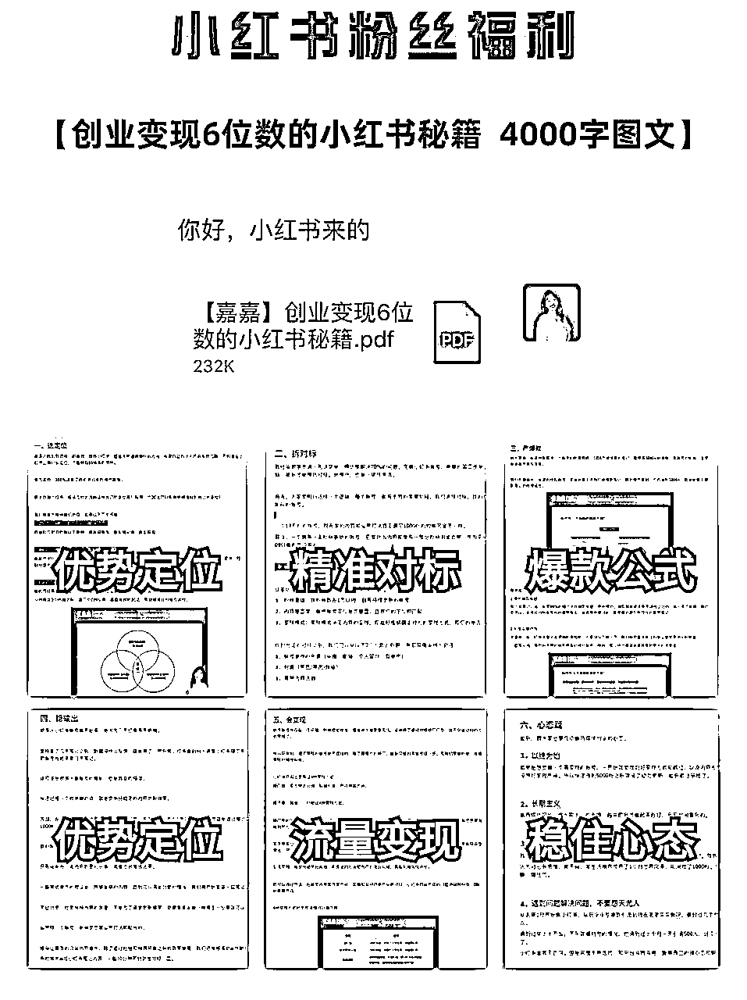
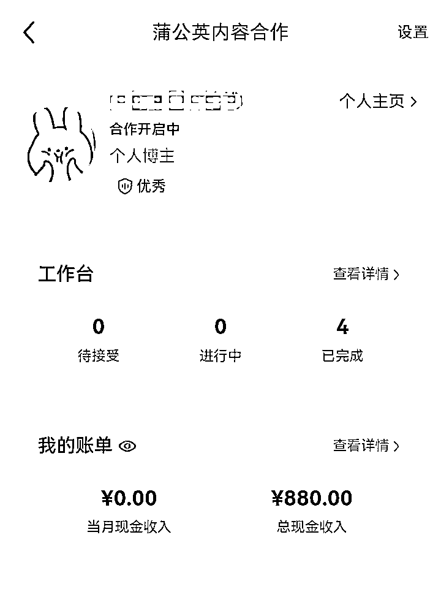
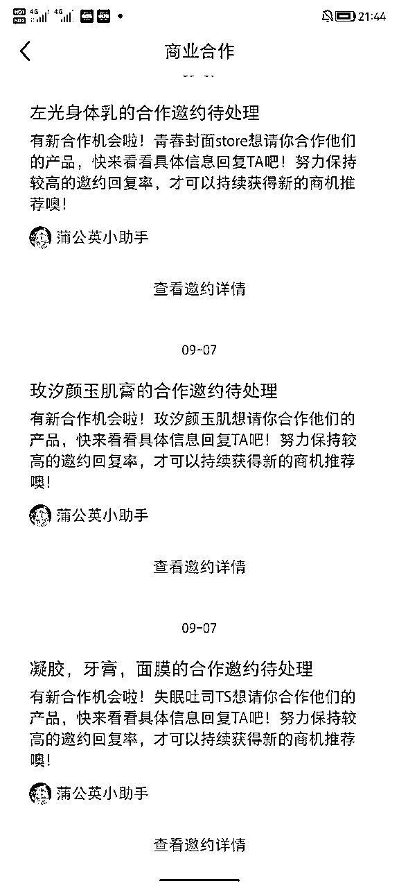
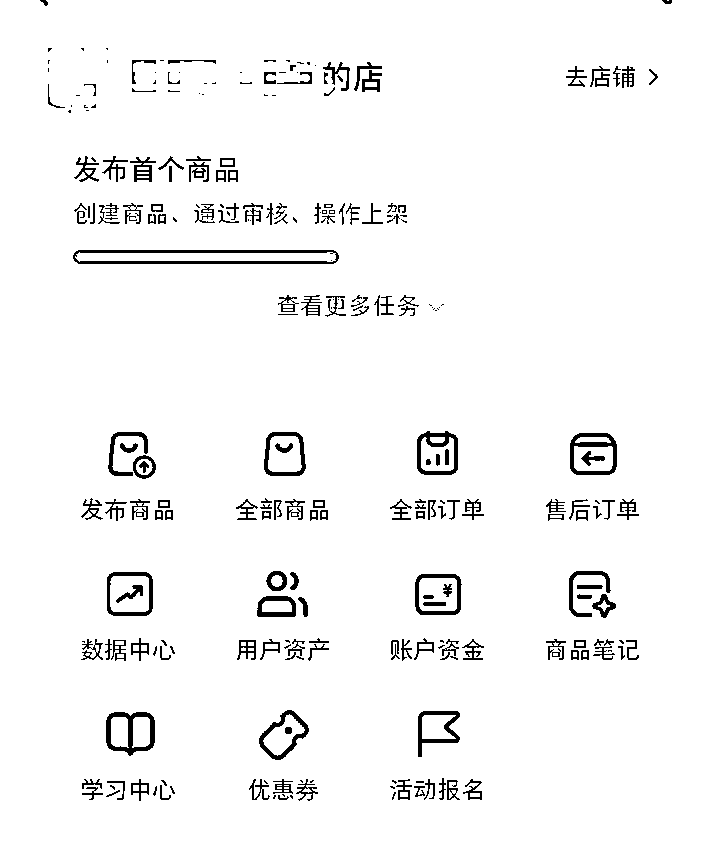
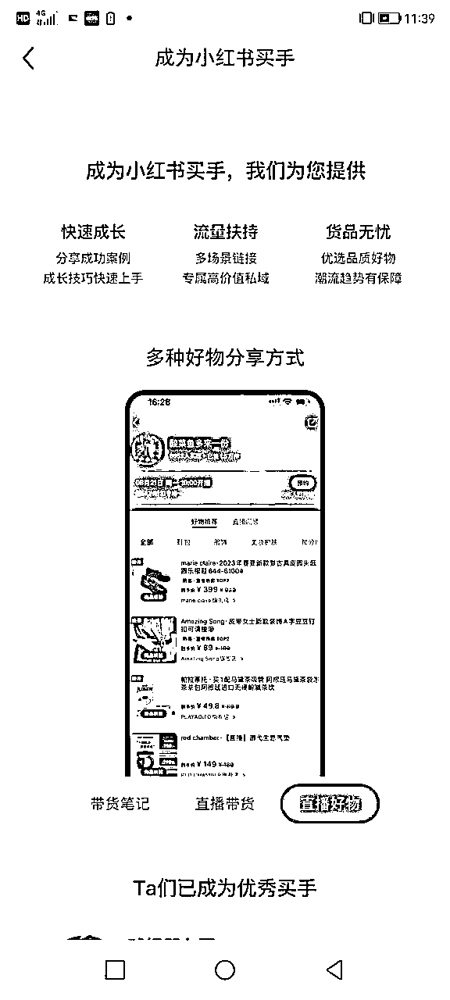
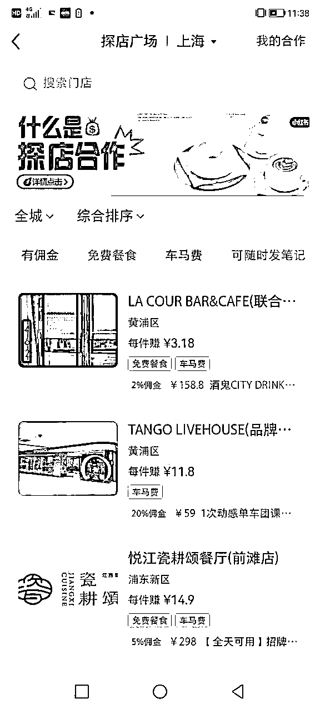

来源：https://nuw023zscw.feishu.cn/docx/WhutdtCpQo4tJUxA8htc5Dlxnwc
大家好，我是张嘉嘉，目前是一个自媒体创业者，主要帮助职场人/个人创业者孵化可变现的自媒体IP。跑通过教育、情感、职场、企业管理、收纳整理等多个赛道的小红书流量变现闭环。
因为很多粉丝加我之后会问，以及我之前分享的帖子也有人问，小红书除了接广告或者引流变现有什么其他变现方式，今天就给大家介绍一下小红书的6种变现方式吧。
很多人可能不理解，平台可以变现为什么还要转到私域去。针对非标以及高客单价的产品，价格越高，就越依赖用户的信任度和粘性才能成交。比如通过朋友圈的营销、私聊触达等一系列的动作能够提升用户信任度，提高转化率。

像我自己的小红书号8000粉，3个月变现了将近6万，基本上都是靠引流到私域里面卖自己的知识付费产品变现的。
不过要注意的是，现在各大平台都希望把用户死死锁在自己的生态当中，对引流行为会有处罚。我们需要更有技巧地使用一些低风险引流的手段去实现引流的目的。
关于小红书低风险引流，可以看我之前写的内容>>
小红书本身就是一个以种草为主的平台，广告变现非常的灵活，当你的账号属性和商家品牌属性匹配，那么商家就会向你发出合作邀约。
广告合作主要有两种方式：
1、站内的蒲公英接广，这个只要满足1000粉就可以开通，一般报价在粉丝数的10%左右比较合理。下图是去年我一个五千粉的图文号。


2、第三方平台接广，平台会根据博主的粉丝量，内容质量等多个因素来定价，很多都是没有粉丝要求，只要笔记发布通过，一般就能拿到报酬，这种正常价在5-10元之间，可以去一些小程序，接单群接单。在QQ上搜“小红书接单”，还挺多这种群的。
不过这种方法具有一定的风险，要不是商家逃单不结算，要不是被平台发现了有不报备广告，会判定违规。
如果有货源优势的话，可以在小红书开店，没有的话也是可以从拼夕夕，1688选品做无货源电商。
或者卖一些低价的资料、虚拟产品等也可以。比如我卖自己的笔记合集，也卖出了10单。
目前小红书开店的门槛也是非常低，没有粉丝也是可以开通，只需要认证专业号即可。
店铺分为个人店，个体户，企业店铺，专卖店（旗舰店）这种几种形式，根据类目进行缴纳保证金。

对于不想自己开店的小伙伴来说，1000粉丝可以开通带货权限，在小红书广场进行选品，用户通过你的作品链接，或者直播间购买的产品，你都会得到相对应的佣金。
可以根据自己账号的赛道，选择对应的商品，比如图书、美妆产品、母婴产品等等。

近两年小红书开始发展本地生活板块，和各大本地生活商家合作，上架了一些团购套餐。比如美食团购、美容体验套餐等等。如果是走探店博主路线的，粉丝数到1000之后，开通权限，可以挂链接，有用户下单之后可以获得一定分佣。

直播带货只是直播变现的一种方式，直播除了带货还可以通过打赏获取礼物来变现，像很多的娱乐主播都是通过这种形式来变现的。
之前我看了一下，目前在小红书上面只有手游直播，还不是很卷。打游戏厉害的小红书可以试试，Z世代喜欢的游戏应该会挺火的，比如什么“蛋仔派对”之类的。
以上6种小红书的变现模式，我自己跑通过前3种，而且我最看好的就是引流到私域变现。
不过无论哪一种方式都好，大家在开始做小红书账号之前需要先选好赛道，想好变现模式再去行动。
其次就是，有自己的产品以及自己的商业闭环，才是最长久的变现模式。